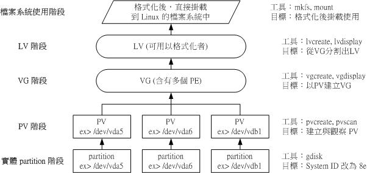

14.3 逻辑卷轴管理员 （Logical Volume Manager）
想像一个情况，你在当初规划主机的时候将 /home 只给他 50G ，等到使用者众多之后导致这个 filesystem 不够大， 此时你能怎么作？多数的朋友都是这样：再加一颗新硬盘，然后重新分区、格式化，将 /home 的数据完整的复制过来， 然后将原本的 partition 卸载重新挂载新的 partition 。啊！好忙碌啊！若是第二次分区却给的容量太多！导致很多磁盘容量被浪费了！ 你想要将这个 partition 缩小时，又该如何作？将上述的流程再搞一遍！唉～烦死了，尤其复制很花时间ㄟ～有没有更简单的方法呢？ 有的！那就是我们这个小节要介绍的 LVM 这玩意儿！
LVM 的重点在于“可以弹性的调整 filesystem 的容量！”而并非在于性能与数据保全上面。 需要文件的读写性能或者是数据的可靠性，请参考前面的 RAID 小节。 LVM 可以整合多个实体 partition 在一起， 让这些 partitions 看起来就像是一个磁盘一样！而且，还可以在未来新增或移除其他的实体 partition 到这个 LVM 管理的磁盘当中。 如此一来，整个磁盘空间的使用上，实在是相当的具有弹性啊！ 既然 LVM 这么好用，那就让我们来瞧瞧这玩意吧！
14.3.1 什么是 LVM： PV, PE, VG, LV 的意义
LVM 的全名是 Logical Volume Manager，中文可以翻译作逻辑卷轴管理员。之所以称为“卷轴”可能是因为可以将 filesystem 像卷轴一样伸长或缩短之故吧！LVM 的作法是将几个实体的 partitions （或 disk） 通过软件组合成为一块看起来是独立的大磁盘 （VG） ，然后将这块大磁盘再经过分区成为可使用分区 （LV）， 最终就能够挂载使用了。但是为什么这样的系统可以进行 filesystem 的扩充或缩小呢？其实与一个称为 PE 的项目有关！ 下面我们就得要针对这几个项目来好好聊聊！
- Physical Volume, PV, 实体卷轴
我们实际的 partition （或 Disk） 需要调整系统识别码 （system ID） 成为 8e （LVM 的识别码），然后再经过 pvcreate 的指令将他转成 LVM 最底层的实体卷轴 （PV） ，之后才能够将这些 PV 加以利用！ 调整 system ID 的方是就是通过 gdisk 啦！
- Volume Group, VG, 卷轴群组
所谓的 LVM 大磁盘就是将许多 PV 整合成这个 VG 的东西就是啦！所以 VG 就是 LVM 组合起来的大磁盘！这么想就好了。 那么这个大磁盘最大可以到多少容量呢？这与下面要说明的 PE 以及 LVM 的格式版本有关喔～在默认的情况下， 使用 32位的 Linux 系统时，基本上 LV 最大仅能支持到 65534 个 PE 而已，若使用默认的 PE 为 4MB 的情况下， 最大容量则仅能达到约 256GB 而已～不过，这个问题在 64位的 Linux 系统上面已经不存在了！LV 几乎没有啥容量限制了！
- Physical Extent, PE, 实体范围区块
LVM 默认使用 4MB 的 PE 区块，而 LVM 的 LV 在 32 位系统上最多仅能含有 65534 个 PE （lvm1 的格式），因此默认的 LVM 的 LV 会有 4M*65534/（1024M/G）=256G。这个 PE 很有趣喔！他是整个 LVM 最小的储存区块，也就是说，其实我们的文件数据都是借由写入 PE 来处理的。简单的说，这个 PE 就有点像文件系统里面的 block 大小啦。 这样说应该就比较好理解了吧？所以调整 PE 会影响到 LVM 的最大容量喔！不过，在 CentOS 6.x 以后，由于直接使用 lvm2 的各项格式功能，以及系统转为 64 位，因此这个限制已经不存在了。
- Logical Volume, LV, 逻辑卷轴
最终的 VG 还会被切成 LV，这个 LV 就是最后可以被格式化使用的类似分区的咚咚了！那么 LV 是否可以随意指定大小呢？ 当然不可以！既然 PE 是整个 LVM 的最小储存单位，那么 LV 的大小就与在此 LV 内的 PE 总数有关。 为了方便使用者利用 LVM 来管理其系统，因此 LV 的设备文件名通常指定为“ /dev/vgname/lvname ”的样式！
此外，我们刚刚有谈到 LVM 可弹性的变更 filesystem 的容量，那是如何办到的？其实他就是通过“交换 PE ”来进行数据转换， 将原本 LV 内的 PE 移转到其他设备中以降低 LV 容量，或将其他设备的 PE 加到此 LV 中以加大容量！ VG、LV 与 PE 的关系有点像下图：
图14.3.1、PE 与 VG 的相关性图示
如上图所示，VG 内的 PE 会分给虚线部分的 LV，如果未来这个 VG 要扩充的话，加上其他的 PV 即可。 而最重要的 LV 如果要扩充的话，也是通过加入 VG 内没有使用到的 PE 来扩充的！
- 实作流程
通过 PV, VG, LV 的规划之后，再利用 mkfs 就可以将你的 LV 格式化成为可以利用的文件系统了！而且这个文件系统的容量在未来还能够进行扩充或减少， 而且里面的数据还不会被影响！实在是很“福气啦！”那实作方面要如何进行呢？很简单呢！ 整个流程由基础到最终的结果可以这样看：
图14.3.2、LVM 各元件的实现流程图示
如此一来，我们就可以利用 LV 这个玩意儿来进行系统的挂载了。不过，你应该要觉得奇怪的是， 那么我的数据写入这个 LV 时，到底他是怎么写入硬盘当中的？ 呵呵！好问题～其实，依据写入机制的不同，而有两种方式：
线性模式 （linear）：假如我将 /dev/vda1, /dev/vdb1 这两个 partition 加入到 VG 当中，并且整个 VG 只有一个 LV 时，那么所谓的线性模式就是：当 /dev/vda1 的容量用完之后，/dev/vdb1 的硬盘才会被使用到， 这也是我们所建议的模式。
交错模式 （triped）：那什么是交错模式？很简单啊，就是我将一笔数据拆成两部分，分别写入 /dev/vda1 与 /dev/vdb1 的意思，感觉上有点像 RAID 0 啦！如此一来，一份数据用两颗硬盘来写入，理论上，读写的性能会比较好。
基本上，LVM 最主要的用处是在实现一个可以弹性调整容量的文件系统上， 而不是在创建一个性能为主的磁盘上，所以，我们应该利用的是 LVM 可以弹性管理整个 partition 大小的用途上，而不是着眼在性能上的。因此， LVM 默认的读写模式是线性模式啦！ 如果你使用 triped 模式，要注意，当任何一个 partition “归天”时，所有的数据都会“损毁”的！ 所以啦，不是很适合使用这种模式啦！如果要强调性能与备份，那么就直接使用 RAID 即可， 不需要用到 LVM 啊！
14.3.2 LVM 实作流程
LVM 必需要核心有支持且需要安装 lvm2 这个软件，好佳在的是， CentOS 与其他较新的 distributions 已经默认将 lvm 的支持与软件都安装妥当了！所以你不需要担心这方面的问题！用就对了！
假设你刚刚也是通过同样的方法来处理鸟哥的测试机 RAID 实作，那么现在应该有 5 个可用的分区才对！ 不过，建议你还是得要修改一下 system ID 比较好！将 RAID 的 fd 改为 LVM 的 8e 吧！现在，我们实作 LVM 有点像下面的模样：
- 使用 4 个 partition ，每个 partition 的容量均为 1GB 左右，且 system ID 需要为 8e；
- 全部的 partition 整合成为一个 VG，VG 名称设置为 vbirdvg；且 PE 的大小为 16MB；
- 创建一个名为 vbirdlv 的 LV，容量大约 2G 好了！
最终这个 LV 格式化为 xfs 的文件系统，且挂载在 /srv/lvm 中
0. Disk 阶段 （实际的磁盘）
鸟哥就不仔细的介绍实体分区了，请您自行参考第七章的 gdisk 来达成下面的范例：
[root@study ~]# gdisk -l /dev/vda
Number Start （sector） End （sector） Size Code Name
1 2048 6143 2.0 MiB EF02
2 6144 2103295 1024.0 MiB 0700
3 2103296 65026047 30.0 GiB 8E00
4 65026048 67123199 1024.0 MiB 8300 Linux filesystem
5 67123200 69220351 1024.0 MiB 8E00 Linux LVM
6 69220352 71317503 1024.0 MiB 8E00 Linux LVM
7 71317504 73414655 1024.0 MiB 8E00 Linux LVM
8 73414656 75511807 1024.0 MiB 8E00 Linux LVM
9 75511808 77608959 1024.0 MiB 8E00 Linux LVM
# 其实 system ID 不改变也没关系！只是为了让我们管理员清楚知道该 partition 的内容，
# 所以这里建议还是修订成正确的磁盘内容较佳！
上面的 /dev/vda{5,6,7,8} 这 4 个分区就是我们的实体分区！也就是下面会实际用到的信息！至于 /dev/vda9 则先保留下来不使用。 注意看，那个 8e 的出现会导致 system 变成“ Linux LVM ”哩！其实没有设置成为 8e 也没关系， 不过某些 LVM 的侦测指令可能会侦测不到该 partition 就是了！接下来，就一个一个的处理各流程吧！
- 1. PV 阶段
要创建 PV 其实很简单，只要直接使用 pvcreate 即可！我们来谈一谈与 PV 有关的指令吧！
- pvcreate ：将实体 partition 创建成为 PV ；
- pvscan ：搜寻目前系统里面任何具有 PV 的磁盘；
- pvdisplay ：显示出目前系统上面的 PV 状态；
- pvremove ：将 PV 属性移除，让该 partition 不具有 PV 属性。
那就直接来瞧一瞧吧！
# 1\. 检查有无 PV 在系统上，然后将 /dev/vda{5-8} 创建成为 PV 格式
[root@study ~]# pvscan
PV /dev/vda3 VG centos lvm2 [30.00 GiB / 14.00 GiB free]
Total: 1 [30.00 GiB] / in use: 1 [30.00 GiB] / in no VG: 0 [0 ]
# 其实安装的时候，我们就有使用 LVM 了喔！所以会有 /dev/vda3 存在的！
[root@study ~]# pvcreate /dev/vda{5,6,7,8}
Physical volume "/dev/vda5" successfully created
Physical volume "/dev/vda6" successfully created
Physical volume "/dev/vda7" successfully created
Physical volume "/dev/vda8" successfully created
# 这个指令可以一口气创建这四个 partition 成为 PV 啦！注意大括号的用途
[root@study ~]# pvscan
PV /dev/vda3 VG centos lvm2 [30.00 GiB / 14.00 GiB free]
PV /dev/vda8 lvm2 [1.00 GiB]
PV /dev/vda5 lvm2 [1.00 GiB]
PV /dev/vda7 lvm2 [1.00 GiB]
PV /dev/vda6 lvm2 [1.00 GiB]
Total: 5 [34.00 GiB] / in use: 1 [30.00 GiB] / in no VG: 4 [4.00 GiB]
# 这就分别显示每个 PV 的信息与系统所有 PV 的信息。尤其最后一行，显示的是：
# 整体 PV 的量 / 已经被使用到 VG 的 PV 量 / 剩余的 PV 量
# 2\. 更详细的列示出系统上面每个 PV 的个别信息：
[root@study ~]# pvdisplay /dev/vda5
"/dev/vda5" is a new physical volume of "1.00 GiB"
--- NEW Physical volume ---
PV Name /dev/vda5 <==实际的 partition 设备名称
VG Name <==因为尚未分配出去，所以空白！
PV Size 1.00 GiB <==就是容量说明
Allocatable NO <==是否已被分配，结果是 NO
PE Size 0 <==在此 PV 内的 PE 大小
Total PE 0 <==共分区出几个 PE
Free PE 0 <==没被 LV 用掉的 PE
Allocated PE 0 <==尚可分配出去的 PE 数量
PV UUID Cb717z-lShq-6WXf-ewEj-qg0W-MieW-oAZTR6
# 由于 PE 是在创建 VG 时才给予的参数，因此在这里看到的 PV 里头的 PE 都会是 0
# 而且也没有多余的 PE 可供分配 （allocatable）。
讲是很难，作是很简单！这样就将 PV 创建了起来啰！简单到不行吧！ ^_^！继续来玩 VG 去！
- 2. VG 阶段
创建 VG 及 VG 相关的指令也不少，我们来看看：
- vgcreate ：就是主要创建 VG 的指令啦！他的参数比较多，等一下介绍。
- vgscan ：搜寻系统上面是否有 VG 存在？
- vgdisplay ：显示目前系统上面的 VG 状态；
- vgextend ：在 VG 内增加额外的 PV ；
- vgreduce ：在 VG 内移除 PV；
- vgchange ：设置 VG 是否启动 （active）；
- vgremove ：删除一个 VG 啊！
与 PV 不同的是， VG 的名称是自订的！我们知道 PV 的名称其实就是 partition 的设备文件名， 但是这个 VG 名称则可以随便你自己取啊！在下面的例子当中，我将 VG 名称取名为 vbirdvg 。创建这个 VG 的流程是这样的：
[root@study ~]# vgcreate [-s N[mgt]] VG名称 PV名称
选项与参数：
-s ：后面接 PE 的大小 （size） ，单位可以是 m, g, t （大小写均可）
# 1\. 将 /dev/vda5-7 创建成为一个 VG，且指定 PE 为 16MB 喔！
[root@study ~]# vgcreate -s 16M vbirdvg /dev/vda{5,6,7}
Volume group "vbirdvg" successfully created
[root@study ~]# vgscan
Reading all physical volumes. This may take a while...
Found volume group "vbirdvg" using metadata type lvm2 # 我们手动制作的
Found volume group "centos" using metadata type lvm2 # 之前系统安装时作的
[root@study ~]# pvscan
PV /dev/vda5 VG vbirdvg lvm2 [1008.00 MiB / 1008.00 MiB free]
PV /dev/vda6 VG vbirdvg lvm2 [1008.00 MiB / 1008.00 MiB free]
PV /dev/vda7 VG vbirdvg lvm2 [1008.00 MiB / 1008.00 MiB free]
PV /dev/vda3 VG centos lvm2 [30.00 GiB / 14.00 GiB free]
PV /dev/vda8 lvm2 [1.00 GiB]
Total: 5 [33.95 GiB] / in use: 4 [32.95 GiB] / in no VG: 1 [1.00 GiB]
# 嘿嘿！发现没！有三个 PV 被用去，剩下 1 个 /dev/vda8 的 PV 没被用掉！
[root@study ~]# vgdisplay vbirdvg
--- Volume group ---
VG Name vbirdvg
System ID
Format lvm2
Metadata Areas 3
Metadata Sequence No 1
VG Access read/write
VG Status resizable
MAX LV 0
Cur LV 0
Open LV 0
Max PV 0
Cur PV 3
Act PV 3
VG Size 2.95 GiB <==整体的 VG 容量有这么大
PE Size 16.00 MiB <==内部每个 PE 的大小
Total PE 189 <==总共的 PE 数量共有这么多！
Alloc PE / Size 0 / 0
Free PE / Size 189 / 2.95 GiB <==尚可配置给 LV 的 PE数量/总容量有这么多！
VG UUID Rx7zdR-y2cY-HuIZ-Yd2s-odU8-AkTW-okk4Ea
# 最后那三行指的就是 PE 能够使用的情况！由于尚未切出 LV，因此所有的 PE 均可自由使用。
这样就创建一个 VG 了！假设我们要增加这个 VG 的容量，因为我们还有 /dev/vda8 嘛！此时你可以这样做：
# 2\. 将剩余的 PV （/dev/vda8） 丢给 vbirdvg 吧！
[root@study ~]# vgextend vbirdvg /dev/vda8
Volume group "vbirdvg" successfully extended
[root@study ~]# vgdisplay vbirdvg
....（前面省略）....
VG Size 3.94 GiB
PE Size 16.00 MiB
Total PE 252
Alloc PE / Size 0 / 0
Free PE / Size 252 / 3.94 GiB
# 基本上，不难吧！这样就可以抽换整个 VG 的大小啊！
我们多了一个设备喔！接下来为这个 vbirdvg 进行分区吧！通过 LV 功能来处理！
- 3. LV 阶段
创造出 VG 这个大磁盘之后，再来就是要创建分区区啦！这个分区区就是所谓的 LV 啰！假设我要将刚刚那个 vbirdvg 磁盘，分区成为 vbirdlv ，整个 VG 的容量都被分配到 vbirdlv 里面去！先来看看能使用的指令后，就直接工作了先！
- lvcreate ：创建 LV 啦！
- lvscan ：查询系统上面的 LV ；
- lvdisplay ：显示系统上面的 LV 状态啊！
- lvextend ：在 LV 里面增加容量！
- lvreduce ：在 LV 里面减少容量；
- lvremove ：删除一个 LV ！
- lvresize ：对 LV 进行容量大小的调整！
[root@study ~]# lvcreate [-L N[mgt]] [-n LV名称] VG名称
[root@study ~]# lvcreate [-l N] [-n LV名称] VG名称
选项与参数：
-L ：后面接容量，容量的单位可以是 M,G,T 等，要注意的是，最小单位为 PE，
因此这个数量必须要是 PE 的倍数，若不相符，系统会自行计算最相近的容量。
-l ：后面可以接 PE 的“个数”，而不是数量。若要这么做，得要自行计算 PE 数。
-n ：后面接的就是 LV 的名称啦！
更多的说明应该可以自行查阅吧！ man lvcreate
# 1\. 将 vbirdvg 分 2GB 给 vbirdlv 喔！
[root@study ~]# lvcreate -L 2G -n vbirdlv vbirdvg
Logical volume "vbirdlv" created
# 由于本案例中每个 PE 为 16M ，如果要用 PE 的数量来处理的话，那使用下面的指令也 OK喔！
# lvcreate -l 128 -n vbirdlv vbirdvg
[root@study ~]# lvscan
ACTIVE '/dev/vbirdvg/vbirdlv' [2.00 GiB] inherit <==新增加的一个 LV 啰！
ACTIVE '/dev/centos/root' [10.00 GiB] inherit
ACTIVE '/dev/centos/home' [5.00 GiB] inherit
ACTIVE '/dev/centos/swap' [1.00 GiB] inherit
[root@study ~]# lvdisplay /dev/vbirdvg/vbirdlv
--- Logical volume ---
LV Path /dev/vbirdvg/vbirdlv # 这个是 LV 的全名喔！
LV Name vbirdlv
VG Name vbirdvg
LV UUID QJJrTC-66sm-878Y-o2DC-nN37-2nFR-0BwMmn
LV Write Access read/write
LV Creation host, time study.centos.vbird, 2015-07-28 02:22:49 +0800
LV Status available
# open 0
LV Size 2.00 GiB # 容量就是这么大！
Current LE 128
Segments 3
Allocation inherit
Read ahead sectors auto
- currently set to 8192
Block device 253:3
如此一来，整个 LV partition 也准备好啦！接下来，就是针对这个 LV 来处理啦！要特别注意的是， VG 的名称为 vbirdvg ， 但是 LV 的名称必须使用全名！亦即是 /dev/vbirdvg/vbirdlv 才对喔！ 后续的处理都是这样的！这点初次接触 LVM 的朋友很容易搞错！
- 文件系统阶段
这个部分鸟哥我就不再多加解释了！直接来进行吧！
# 1\. 格式化、挂载与观察我们的 LV 吧！
[root@study ~]# mkfs.xfs /dev/vbirdvg/vbirdlv <==注意 LV 全名！
[root@study ~]# mkdir /srv/lvm
[root@study ~]# mount /dev/vbirdvg/vbirdlv /srv/lvm
[root@study ~]# df -Th /srv/lvm
Filesystem Type Size Used Avail Use% Mounted on
/dev/mapper/vbirdvg-vbirdlv xfs 2.0G 33M 2.0G 2% /srv/lvm
[root@study ~]# cp -a /etc /var/log /srv/lvm
[root@study ~]# df -Th /srv/lvm
Filesystem Type Size Used Avail Use% Mounted on
/dev/mapper/vbirdvg-vbirdlv xfs 2.0G 152M 1.9G 8% /srv/lvm <==确定是可用的啊！
通过这样的功能，我们现在已经创建好一个 LV 了！你可以自由的应用 /srv/lvm 内的所有资源！
14.3.3 放大 LV 容量
我们不是说 LVM 最大的特色就是弹性调整磁盘容量吗？好！那我们就来处理一下，如果要放大 LV 的容量时， 该如何进行完整的步骤呢？其实一点都不难喔！如果你回去看图 14.3.2 的话，那么你会知道放大文件系统时， 需要下面这些流程的：
VG 阶段需要有剩余的容量：因为需要放大文件系统，所以需要放大 LV，但是若没有多的 VG 容量， 那么更上层的 LV 与文件系统就无法放大的。因此，你得要用尽各种方法来产生多的 VG 容量才行。一般来说，如果 VG 容量不足， 最简单的方法就是再加硬盘！然后将该硬盘使用上面讲过的 pvcreate 及 vgextend 增加到该 VG 内即可！
LV 阶段产生更多的可用容量：如果 VG 的剩余容量足够了， 此时就可以利用 lvresize 这个指令来将剩余容量加入到所需要增加的 LV 设备内！过程相当简单！
文件系统阶段的放大：我们的 Linux 实际使用的其实不是 LV 啊！而是 LV 这个设备内的文件系统！ 所以一切最终还是要以文件系统为依归！目前在 Linux 环境下，鸟哥测试过可以放大的文件系统有 XFS 以及 EXT 家族！ 至于缩小仅有 EXT 家族，目前 XFS 文件系统并不支持文件系统的容量缩小喔！要注意！要注意！XFS 放大文件系统通过简单的 xfs_growfs 指令即可！
其中最后一个步骤最重要！我们在第七章当中知道， 整个文件系统在最初格式化的时候就创建了 inode/block/superblock 等信息，要改变这些信息是很难的！ 不过因为文件系统格式化的时候创建的是多个 block group ，因此我们可以通过在文件系统当中增加 block group 的方式来增减文件系统的量！而增减 block group 就是利用 xfs_growfs 啰！所以最后一步是针对文件系统来处理的， 前面几步则是针对 LVM 的实际容量大小！

Tips 因此，严格说起来，放大文件系统并不是没有进行“格式化”喔！放大文件系统时，格式化的位置在于该设备后来新增的部份，设备的前面已经存在的文件系统则没有变化。 而新增的格式化过的数据，再反馈回原本的 supberblock 这样而已！
让我们来实作个范例，假设我们想要针对 /srv/lvm 再增加 500M 的容量，该如何处置？
# 1\. 由前面的过程我们知道 /srv/lvm 是 /dev/vbirdvg/vbirdlv 这个设备，所以检查 vbirdvg 吧！
[root@study ~]# vgdisplay vbirdvg
--- Volume group ---
VG Name vbirdvg
System ID
Format lvm2
Metadata Areas 4
Metadata Sequence No 3
VG Access read/write
VG Status resizable
MAX LV 0
Cur LV 1
Open LV 1
Max PV 0
Cur PV 4
Act PV 4
VG Size 3.94 GiB
PE Size 16.00 MiB
Total PE 252
Alloc PE / Size 128 / 2.00 GiB
Free PE / Size 124 / 1.94 GiB # 看起来剩余容量确实超过 500M 的！
VG UUID Rx7zdR-y2cY-HuIZ-Yd2s-odU8-AkTW-okk4Ea
# 既然 VG 的容量够大了！所以直接来放大 LV 吧！！
# 2\. 放大 LV 吧！利用 lvresize 的功能来增加！
[root@study ~]# lvresize -L +500M /dev/vbirdvg/vbirdlv
Rounding size to boundary between physical extents: 512.00 MiB
Size of logical volume vbirdvg/vbirdlv changed from 2.00 GiB （128 extents） to 2.50 GiB
（160 extents）.
Logical volume vbirdlv successfully resized
# 这样就增加了 LV 了喔！lvresize 的语法很简单，基本上同样通过 -l 或 -L 来增加！
# 若要增加则使用 + ，若要减少则使用 - ！详细的选项请参考 man lvresize 啰！
[root@study ~]# lvscan
ACTIVE '/dev/vbirdvg/vbirdlv' [2.50 GiB] inherit
ACTIVE '/dev/centos/root' [10.00 GiB] inherit
ACTIVE '/dev/centos/home' [5.00 GiB] inherit
ACTIVE '/dev/centos/swap' [1.00 GiB] inherit
# 可以发现 /dev/vbirdvg/vbirdlv 容量由 2G 增加到 2.5G 啰！
[root@study ~]# df -Th /srv/lvm
Filesystem Type Size Used Avail Use% Mounted on
/dev/mapper/vbirdvg-vbirdlv xfs 2.0G 111M 1.9G 6% /srv/lvm
看到了吧？最终的结果中 LV 真的有放大到 2.5GB 喔！但是文件系统却没有相对增加！而且，我们的 LVM 可以线上直接处理，并不需要特别给他 umount 哩！真是人性化！ 但是还是得要处理一下文件系统的容量啦！开始观察一下文件系统，然后使用 xfs_growfs 来处理一下吧！
# 3.1 先看一下原本的文件系统内的 superblock 记录情况吧！
[root@study ~]# xfs_info /srv/lvm
meta-data=/dev/mapper/vbirdvg-vbirdlv isize=256 agcount=4, agsize=131072 blks
= sectsz=512 attr=2, projid32bit=1
= crc=0 finobt=0
data = bsize=4096 blocks=524288, imaxpct=25
= sunit=0 swidth=0 blks
naming =version 2 bsize=4096 ascii-ci=0 ftype=0
log =internal bsize=4096 blocks=2560, version=2
= sectsz=512 sunit=0 blks, lazy-count=1
realtime =none extsz=4096 blocks=0, rtextents=0
[root@study ~]# xfs_growfs /srv/lvm # 这一步骤才是最重要的！
[root@study ~]# xfs_info /srv/lvm
meta-data=/dev/mapper/vbirdvg-vbirdlv isize=256 agcount=5, agsize=131072 blks
= sectsz=512 attr=2, projid32bit=1
= crc=0 finobt=0
data = bsize=4096 blocks=655360, imaxpct=25
= sunit=0 swidth=0 blks
naming =version 2 bsize=4096 ascii-ci=0 ftype=0
log =internal bsize=4096 blocks=2560, version=2
= sectsz=512 sunit=0 blks, lazy-count=1
realtime =none extsz=4096 blocks=0, rtextents=0
[root@study ~]# df -Th /srv/lvm
Filesystem Type Size Used Avail Use% Mounted on
/dev/mapper/vbirdvg-vbirdlv xfs 2.5G 111M 2.4G 5% /srv/lvm
[root@study ~]# ls -l /srv/lvm
drwxr-xr-x. 131 root root 8192 Jul 28 00:12 etc
drwxr-xr-x. 16 root root 4096 Jul 28 00:01 log
# 刚刚复制进去的数据可还是存在的喔！并没有消失不见！
在上表中，注意看两次 xfs_info 的结果，你会发现到 1）整个 block group （agcount） 的数量增加一个！那个 block group 就是纪录新的设备容量之文件系统所在！ 而你也会 2）发现整体的 block 数量增加了！这样整个文件系统就给他放大了！同时，使用 df 去查阅时，就真的看到增加的量了吧！ 文件系统的放大可以在 On-line 的环境下实作耶！超棒的！
最后，请注意！目前的 XFS 文件系统中，并没有缩小文件系统容量的设计！也就是说，文件系统只能放大不能缩小喔！如果你想要保有放大、缩小的本事， 那还请回去使用 EXT 家族最新的 EXT4 文件系统啰！XFS 目前是办不到的！
14.3.4 使用 LVM thin Volume 让 LVM 动态自动调整磁盘使用率
想像一个情况，你有个目录未来会使用到大约 5T 的容量，但是目前你的磁盘仅有 3T，问题是，接下来的两个月你的系统都还不会超过 3T 的容量， 不过你想要让用户知道，就是他最多有 5T 可以使用就是了！而且在一个月内你确实可以将系统提升到 5T 以上的容量啊！ 你又不想要在提升容量后才放大到 5T！那可以怎么办？呵呵！这时可以考虑“实际用多少才分配多少容量给 LV 的 LVM Thin Volume ”功能！
另外，再想像一个环境，如果你需要有 3 个 10GB 的磁盘来进行某些测试，问题是你的环境仅有 5GB 的剩余容量，再传统的 LVM 环境下， LV 的容量是一开始就分配好的，因此你当然没有办法在这样的环境中产生出 3 个 10GB 的设备啊！而且更呕的是，那个 10GB 的设备其实每个实际使用率都没有超过 10%， 也就是总用量目前仅会到 3GB 而已！但...我实际就有 5GB 的容量啊！为何不给我做出 3 个只用 1GB 的 10GB 设备呢？有啊！就还是 LVM thin Volume 啊！
什么是 LVM thin Volume 呢？这东西其实挺好玩的，他的概念是：先创建一个可以实支实付、用多少容量才分配实际写入多少容量的磁盘容量储存池 （thin pool）， 然后再由这个 thin pool 去产生一个“指定要固定容量大小的 LV 设备”，这个 LV 就有趣了！虽然你会看到“宣告上，他的容量可能有 10GB ，但实际上， 该设备用到多少容量时，才会从 thin pool 去实际取得所需要的容量”！就如同上面的环境说的，可能我们的 thin pool 仅有 1GB 的容量， 但是可以分配给一个 10GB 的 LV 设备！而该设备实际使用到 500M 时，整个 thin pool 才分配 500M 给该 LV 的意思！当然啦！ 在所有由 thin pool 所分配出来的 LV 设备中，总实际使用量绝不能超过 thin pool 的最大实际容量啊！如这个案例说的， thin pool 仅有 1GB， 那所有的由这个 thin pool 创建出来的 LV 设备内的实际用量，就绝不能超过 1GB 啊！
我们来实作个环境好了！刚刚鸟哥的 vbirdvg 应该还有剩余容量，那么请这样作看看：
- 由 vbirdvg 的剩余容量取出 1GB 来做出一个名为 vbirdtpool 的 thin pool LV 设备，这就是所谓的磁盘容量储存池 （thin pool）
- 由 vbirdvg 内的 vbirdtpool 产生一个名为 vbirdthin1 的 10GB LV 设备
- 将此设备实际格式化为 xfs 文件系统，并且挂载于 /srv/thin 目录内！
话不多说，我们来实验看看！
# 1\. 先以 lvcreate 来创建 vbirdtpool 这个 thin pool 设备：
[root@study ~]# lvcreate -L 1G -T vbirdvg/vbirdtpool # 最重要的创建指令
[root@study ~]# lvdisplay /dev/vbirdvg/vbirdtpool
--- Logical volume ---
LV Name vbirdtpool
VG Name vbirdvg
LV UUID p3sLAg-Z8jT-tBuT-wmEL-1wKZ-jrGP-0xmLtk
LV Write Access read/write
LV Creation host, time study.centos.vbird, 2015-07-28 18:27:32 +0800
LV Pool metadata vbirdtpool_tmeta
LV Pool data vbirdtpool_tdata
LV Status available
# open 0
LV Size 1.00 GiB # 总共可分配出去的容量
Allocated pool data 0.00% # 已分配的容量百分比
Allocated metadata 0.24% # 已分配的中介数据百分比
Current LE 64
Segments 1
Allocation inherit
Read ahead sectors auto
- currently set to 8192
Block device 253:6
# 非常有趣吧！竟然在 LV 设备中还可以有再分配 （Allocated） 的项目耶！果然是储存池！
[root@study ~]# lvs vbirdvg # 语法为 lvs VGname
LV VG Attr LSize Pool Origin Data% Meta% Move Log Cpy%Sync Convert
vbirdlv vbirdvg -wi-ao---- 2.50g
vbirdtpool vbirdvg twi-a-tz-- 1.00g 0.00 0.24
# 这个 lvs 指令的输出更加简单明了！直接看比较清晰！
# 2\. 开始创建 vbirdthin1 这个有 10GB 的设备，注意！必须使用 --thin 与 vbirdtpool 链接喔！
[root@study ~]# lvcreate -V 10G -T vbirdvg/vbirdtpool -n vbirdthin1
[root@study ~]# lvs vbirdvg
LV VG Attr LSize Pool Origin Data% Meta% Move Log Cpy%Sync Convert
vbirdlv vbirdvg -wi-ao---- 2.50g
vbirdthin1 vbirdvg Vwi-a-tz-- 10.00g vbirdtpool 0.00
vbirdtpool vbirdvg twi-aotz-- 1.00g 0.00 0.27
# 很有趣吧！明明连 vbirdvg 这个 VG 都没有足够大到 10GB 的容量，通过 thin pool
# 竟然就产生了 10GB 的 vbirdthin1 这个设备了！好有趣！
# 3\. 开始创建文件系统
[root@study ~]# mkfs.xfs /dev/vbirdvg/vbirdthin1
[root@study ~]# mkdir /srv/thin
[root@study ~]# mount /dev/vbirdvg/vbirdthin1 /srv/thin
[root@study ~]# df -Th /srv/thin
Filesystem Type Size Used Avail Use% Mounted on
/dev/mapper/vbirdvg-vbirdthin1 xfs 10G 33M 10G 1% /srv/thin
# 真的有 10GB 耶！！
# 4\. 测试一下容量的使用！创建 500MB 的文件，但不可超过 1GB 的测试为宜！
[root@study ~]# dd if=/dev/zero of=/srv/thin/test.img bs=1M count=500
[root@study ~]# lvs vbirdvg
LV VG Attr LSize Pool Origin Data% Meta% Move Log Cpy%Sync Convert
vbirdlv vbirdvg -wi-ao---- 2.50g
vbirdthin1 vbirdvg Vwi-aotz-- 10.00g vbirdtpool 4.99
vbirdtpool vbirdvg twi-aotz-- 1.00g 49.93 1.81
# 很要命！这时已经分配出 49% 以上的容量了！而 vbirdthin1 却只看到用掉 5% 而已！
# 所以鸟哥认为，这个 thin pool 非常好用！但是在管理上，得要特别特别的留意！
这就是用多少算多少的 thin pool 实作方式！基本上，用来骗人挺吓人的！小小的一个磁盘可以仿真出好多容量！但实际上，真的可用容量就是实际的磁盘储存池内的容量！ 如果突破该容量，这个 thin pool 可是会爆炸而让数据损毁的！要注意！要注意！
14.3.5 LVM 的 LV 磁盘快照
现在你知道 LVM 的好处咯，未来如果你有想要增加某个 LVM 的容量时，就可以通过这个放大的功能来处理。 那么 LVM 除了这些功能之外，还有什么能力呢？其实他还有一个重要的能力，那就是 LV 磁盘的快照 （snapshot）。 什么是 LV 磁盘快照啊？快照就是将当时的系统信息记录下来，就好像照相记录一般！ 未来若有任何数据更动了，则原始数据会被搬移到快照区，没有被更动的区域则由快照区与文件系统共享。 用讲的好像很难懂，我们用图解说明一下好了：
 图14.3.3、LVM 快照区域的备份示意图
图14.3.3、LVM 快照区域的备份示意图
左图为最初创建 LV 磁盘快照区的状况，LVM 会预留一个区域 （左图的左侧三个 PE 区块） 作为数据存放处。 此时快照区内并没有任何数据，而快照区与系统区共享所有的 PE 数据， 因此你会看到快照区的内容与文件系统是一模一样的。 等到系统运行一阵子后，假设 A 区域的数据被更动了 （上面右图所示），则更动前系统会将该区域的数据移动到快照区， 所以在右图的快照区被占用了一块 PE 成为 A，而其他 B 到 I 的区块则还是与文件系统共享！
照这样的情况来看，LVM 的磁盘快照是非常棒的“备份工具”，因为他只有备份有被更动到的数据， 文件系统内没有被变更的数据依旧保持在原本的区块内，但是 LVM 快照功能会知道那些数据放置在哪里， 因此“快照”当时的文件系统就得以“备份”下来，且快照所占用的容量又非常小！所以您说，这不是很棒的工具又是什么？
那么快照区要如何创建与使用呢？首先，由于快照区与原本的 LV 共享很多 PE 区块，因此快照区与被快照的 LV 必须要在同一个 VG 上头。
另外，或许你跟鸟哥一样，会想到说：“咦！ 我们能不能使用 thin pool 的功能来制作快照”呢？老实说，是可以的！不过使用上面的限制非常的多！包括最好要在同一个 thin pool 内的原始 LV 磁盘， 如果为非 thin pool 内的原始 LV 磁盘快照，则该磁盘快照“不可以写入”，亦即 LV 磁盘要设置成只读才行！同时， 使用 thin pool 做出来的快照，通常都是不可启动 （inactive） 的默认情况，启动又有点麻烦～所以，至少目前 （CentOS 7.x） 的环境下， 鸟哥还不是很建议你使用 thin pool 快照喔！
下面我们针对传统 LV 磁盘进行快照的创建，大致流程为：
- 预计被拿来备份的原始 LV 为 /dev/vbirdvg/vbirdlv 这个东西～
使用传统方式快照创建，原始碟为 /dev/vbirdvg/vbirdlv，快照名称为 vbirdsnap1，容量为 vbirdvg 的所有剩余容量
传统快照区的创建
# 1\. 先观察 VG 还剩下多少剩余容量
[root@study ~]# vgdisplay vbirdvg
....（其他省略）....
Total PE 252
Alloc PE / Size 226 / 3.53 GiB
Free PE / Size 26 / 416.00 MiB
# 就只有剩下 26 个 PE 了！全部分配给 vbirdsnap1 啰！
# 2\. 利用 lvcreate 创建 vbirdlv 的快照区，快照被取名为 vbirdsnap1，且给予 26 个 PE
[root@study ~]# lvcreate -s -l 26 -n vbirdsnap1 /dev/vbirdvg/vbirdlv
Logical volume "vbirdsnap1" created
# 上述的指令中最重要的是那个 -s 的选项！代表是 snapshot 快照功能之意！
# -n 后面接快照区的设备名称， /dev/.... 则是要被快照的 LV 完整文件名。
# -l 后面则是接使用多少个 PE 来作为这个快照区使用。
[root@study ~]# lvdisplay /dev/vbirdvg/vbirdsnap1
--- Logical volume ---
LV Path /dev/vbirdvg/vbirdsnap1
LV Name vbirdsnap1
VG Name vbirdvg
LV UUID I3m3Oc-RIvC-unag-DiiA-iQgI-I3z9-0OaOzR
LV Write Access read/write
LV Creation host, time study.centos.vbird, 2015-07-28 19:21:44 +0800
LV snapshot status active destination for vbirdlv
LV Status available
# open 0
LV Size 2.50 GiB # 原始碟，就是 vbirdlv 的原始容量
Current LE 160
COW-table size 416.00 MiB # 这个快照能够纪录的最大容量！
COW-table LE 26
Allocated to snapshot 0.00% # 目前已经被用掉的容量！
Snapshot chunk size 4.00 KiB
Segments 1
Allocation inherit
Read ahead sectors auto
- currently set to 8192
Block device 253:11
您看看！这个 /dev/vbirdvg/vbirdsnap1 快照区就被创建起来了！而且他的 VG 量竟然与原本的 /dev/vbirdvg/vbirdlv 相同！也就是说，如果你真的挂载这个设备时，看到的数据会跟原本的 vbirdlv 相同喔！我们就来测试看看：
[root@study ~]# mkdir /srv/snapshot1
[root@study ~]# mount -o nouuid /dev/vbirdvg/vbirdsnap1 /srv/snapshot1
[root@study ~]# df -Th /srv/lvm /srv/snapshot1
Filesystem Type Size Used Avail Use% Mounted on
/dev/mapper/vbirdvg-vbirdlv xfs 2.5G 111M 2.4G 5% /srv/lvm
/dev/mapper/vbirdvg-vbirdsnap1 xfs 2.5G 111M 2.4G 5% /srv/snapshot1
# 有没有看到！这两个咚咚竟然是一模一样喔！我们根本没有动过
# /dev/vbirdvg/vbirdsnap1 对吧！不过这里面会主动记录原 vbirdlv 的内容！
因为 XFS 不允许相同的 UUID 文件系统的挂载，因此我们得要加上那个 nouuid 的参数，让文件系统忽略相同的 UUID 所造成的问题！ 没办法啊！因为快照出来的文件系统当然是会一模一样的！
- 利用快照区复原系统
首先，我们来玩一下，如何利用快照区复原系统吧！不过你要注意的是，你要复原的数据量不能够高于快照区所能负载的实际容量。由于原始数据会被搬移到快照区， 如果你的快照区不够大，若原始数据被更动的实际数据量比快照区大，那么快照区当然容纳不了，这时候快照功能会失效喔！
我们的 /srv/lvm 已经有 /srv/lvm/etc, /srv/lvm/log 等目录了，接下来我们将这个文件系统的内容作个变更， 然后再以快照区数据还原看看：
# 1\. 先将原本的 /dev/vbirdvg/vbirdlv 内容作些变更，增增减减一些目录吧！
[root@study ~]# df -Th /srv/lvm /srv/snapshot1
Filesystem Type Size Used Avail Use% Mounted on
/dev/mapper/vbirdvg-vbirdlv xfs 2.5G 111M 2.4G 5% /srv/lvm
/dev/mapper/vbirdvg-vbirdsnap1 xfs 2.5G 111M 2.4G 5% /srv/snapshot1
[root@study ~]# cp -a /usr/share/doc /srv/lvm
[root@study ~]# rm -rf /srv/lvm/log
[root@study ~]# rm -rf /srv/lvm/etc/sysconfig
[root@study ~]# df -Th /srv/lvm /srv/snapshot1
Filesystem Type Size Used Avail Use% Mounted on
/dev/mapper/vbirdvg-vbirdlv xfs 2.5G 146M 2.4G 6% /srv/lvm
/dev/mapper/vbirdvg-vbirdsnap1 xfs 2.5G 111M 2.4G 5% /srv/snapshot1
[root@study ~]# ll /srv/lvm /srv/snapshot1
/srv/lvm:
total 60
drwxr-xr-x. 887 root root 28672 Jul 20 23:03 doc
drwxr-xr-x. 131 root root 8192 Jul 28 00:12 etc
/srv/snapshot1:
total 16
drwxr-xr-x. 131 root root 8192 Jul 28 00:12 etc
drwxr-xr-x. 16 root root 4096 Jul 28 00:01 log
# 两个目录的内容看起来已经不太一样了喔！检测一下快照 LV 吧！
[root@study ~]# lvdisplay /dev/vbirdvg/vbirdsnap1
--- Logical volume ---
LV Path /dev/vbirdvg/vbirdsnap1
....（中间省略）....
Allocated to snapshot 21.47%
# 鸟哥仅列出最重要的部份！就是全部的容量已经被用掉了 21.4% 啰！
# 2\. 利用快照区将原本的 filesystem 备份，我们使用 xfsdump 来处理！
[root@study ~]# xfsdump -l 0 -L lvm1 -M lvm1 -f /home/lvm.dump /srv/snapshot1
# 此时你就会有一个备份数据，亦即是 /home/lvm.dump 了！
为什么要备份呢？为什么不可以直接格式化 /dev/vbirdvg/vbirdlv 然后将 /dev/vbirdvg/vbirdsnap1 直接复制给 vbirdlv 呢？ 要知道 vbirdsnap1 其实是 vbirdlv 的快照，因此如果你格式化整个 vbirdlv 时，原本的文件系统所有数据都会被搬移到 vbirdsnap1。 那如果 vbirdsnap1 的容量不够大 （通常也真的不够大），那么部分数据将无法复制到 vbirdsnap1 内，数据当然无法全部还原啊！ 所以才要在上面表格中制作出一个备份文件的！了解乎？
而快照还有另外一个功能，就是你可以比对 /srv/lvm 与 /srv/snapshot1 的内容，就能够发现到最近你到底改了啥咚咚！ 这样也是很不赖啊！您说是吧！ ^_^！接下来让我们准备还原 vbirdlv 的内容吧！
# 3\. 将 vbirdsnap1 卸载并移除 （因为里面的内容已经备份起来了）
[root@study ~]# umount /srv/snapshot1
[root@study ~]# lvremove /dev/vbirdvg/vbirdsnap1
Do you really want to remove active logical volume "vbirdsnap1"? [y/n]: y
Logical volume "vbirdsnap1" successfully removed
[root@study ~]# umount /srv/lvm
[root@study ~]# mkfs.xfs -f /dev/vbirdvg/vbirdlv
[root@study ~]# mount /dev/vbirdvg/vbirdlv /srv/lvm
[root@study ~]# xfsrestore -f /home/lvm.dump -L lvm1 /srv/lvm
[root@study ~]# ll /srv/lvm
drwxr-xr-x. 131 root root 8192 Jul 28 00:12 etc
drwxr-xr-x. 16 root root 4096 Jul 28 00:01 log
# 是否与最初的内容相同啊！这就是通过快照来还原的一个简单的方法啰！
- 利用快照区进行各项练习与测试的任务，再以原系统还原快照
换个角度来想想，我们将原本的 vbirdlv 当作备份数据，然后将 vbirdsnap1 当作实际在运行中的数据， 任何测试的动作都在 vbirdsnap1 这个快照区当中测试，那么当测试完毕要将测试的数据删除时，只要将快照区删去即可！ 而要复制一个 vbirdlv 的系统，再作另外一个快照区即可！这样是否非常方便啊？ 这对于教学环境中每年都要帮学生制作一个练习环境主机的测试，非常有帮助呢！
Tips 以前鸟哥老是觉得使用 LVM 的快照来进行备份不太合理，因为还要制作一个备份文件！后来仔细研究并参考徐秉义老师的教材[4]后，才发现 LVM 的快照实在是一个棒到不行的工具！尤其是在虚拟机当中创建多份给同学使用的测试环境， 你只要有一个基础的环境保持住，其他的环境使用快照来提供即可。实时同学将系统搞烂了，你只要将快照区删除， 再重建一个快照区！这样环境就恢复了！天呐！实在是太棒了！ ^_^
14.3.6 LVM 相关指令汇整与 LVM 的关闭
好了，我们将上述用过的一些指令给他汇整一下，提供给您参考参考：
| 任务 | PV 阶段 | VG 阶段 | LV 阶段 | filesystem（XFS / EXT4） | |
|---|---|---|---|---|---|
| 搜寻（scan） | pvscan | vgscan | lvscan | lsblk, blkid | |
| 创建（create） | pvcreate | vgcreate | lvcreate | mkfs.xfs | mkfs.ext4 |
| 列出（display） | pvdisplay | vgdisplay | lvdisplay | df, mount | |
| 增加（extend） | vgextend | lvextend （lvresize） | xfs_growfs | resize2fs | |
| 减少（reduce） | vgreduce | lvreduce （lvresize） | 不支持 | resize2fs | |
| 删除（remove） | pvremove | vgremove | lvremove | umount, 重新格式化 | |
| 改变容量（resize） | lvresize | xfs_growfs | resize2fs | ||
| 改变属性（attribute） | pvchange | vgchange | lvchange | /etc/fstab, remount |
至于文件系统阶段 （filesystem 的格式化处理） 部分，还需要以 xfsgrowfs 来修订文件系统实际的大小才行啊！ ^^ 。至于虽然 LVM 可以弹性的管理你的磁盘容量，但是要注意，如果你想要使用 LVM 管理您的硬盘时，那么在安装的时候就得要做好 LVM 的规划了， 否则未来还是需要先以传统的磁盘增加方式来增加后，移动数据后，才能够进行 LVM 的使用啊！
会玩 LVM 还不行！你必须要会移除系统内的 LVM 喔！因为你的实体 partition 已经被使用到 LVM 去， 如果你还没有将 LVM 关闭就直接将那些 partition 删除或转为其他用途的话，系统是会发生很大的问题的！ 所以啰，你必须要知道如何将 LVM 的设备关闭并移除才行！会不会很难呢？其实不会啦！ 依据以下的流程来处理即可：
- 先卸载系统上面的 LVM 文件系统 （包括快照与所有 LV）；
- 使用 lvremove 移除 LV ；
- 使用 vgchange -a n VGname 让 VGname 这个 VG 不具有 Active 的标志；
- 使用 vgremove 移除 VG：
- 使用 pvremove 移除 PV；
- 最后，使用 fdisk 修改 ID 回来啊！
好吧！那就实际的将我们之前创建的所有 LVM 数据给删除吧！
[root@study ~]# umount /srv/lvm /srv/thin /srv/snapshot1
[root@study ~]# lvs vbirdvg
LV VG Attr LSize Pool Origin Data% Meta% Move Log Cpy%Sync
vbirdlv vbirdvg -wi-a----- 2.50g
vbirdthin1 vbirdvg Vwi-a-tz-- 10.00g vbirdtpool 4.99
vbirdtpool vbirdvg twi-aotz-- 1.00g 49.93 1.81
# 要注意！先删除 vbirdthin1 --> vbirdtpool --> vbirdlv 比较好！
[root@study ~]# lvremove /dev/vbirdvg/vbirdthin1 /dev/vbirdvg/vbirdtpool
[root@study ~]# lvremove /dev/vbirdvg/vbirdlv
[root@study ~]# vgchange -a n vbirdvg
0 logical volume（s） in volume group "vbirdvg" now active
[root@study ~]# vgremove vbirdvg
Volume group "vbirdvg" successfully removed
[root@study ~]# pvremove /dev/vda{5,6,7,8}
最后再用 gdisk 将磁盘的 ID 给他改回来 83 就好啦！整个过程就这样的啦！ ^_^